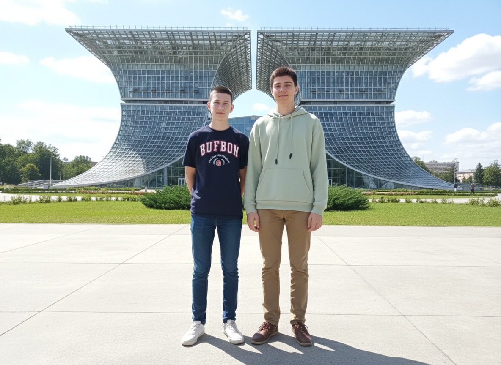
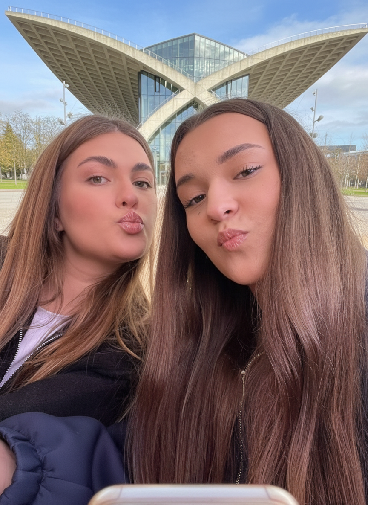
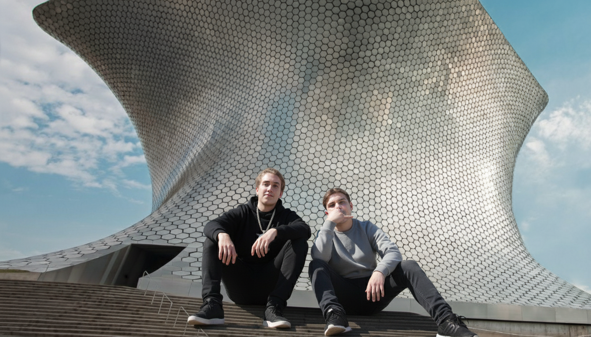
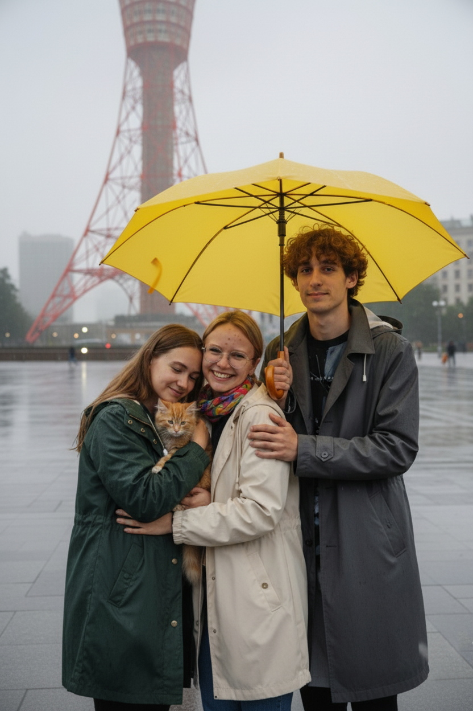

Студенти в пошуках кривої: Проєкт Мар'яни Юріївни
Дев'ять студентів кафедри комп'ютерної інженерії — Анна, Юлія, Марія, Надія, Макс, Дмитро, Юліан, Богдан і Дем'ян — отримали, на перший погляд, незвичайне курсове завдання. Їхня викладачка, Боценюк Мар'яна Юріївна, запустила амбітний міжнародний проєкт: "Архітектурні ДНК: Гіпербола другого порядку у світовому будівництві".
Мета полягала не просто в тому, щоб знайти ці криві. Студенти мали зібрати дані для створення точних 3D-моделей та запустити симуляції навантажень, доводячи, чому саме ця форма є настільки ефективною. Розділившись на команди, вони вирушили у подорож.
Етап 1: США — Скляні Асимптоти
Перша команда прибула до інноваційного кампусу в США, де на них чекав архітектурний шедевр зі скла та бетону.
Богдан та Дем'ян першими почали роботу. Вони розгорнули обладнання для лазерного сканування. "Дивись, Дем'не, фасад ідеально лягає в рівняння," — сказав Богдан, дивлячись на дані в ноутбуці. "Мар'яна Юріївна буде задоволена. Починаємо рендеринг".

Трохи пізніше до них приєдналися Анна та Юлія, які відповідали за візуальну документацію. З їхнього ракурсу дах будівлі виглядав як дві потужні асимптоти. "Селфі для звіту — обов'язково!" — запропонувала Аня. Це був їхній перший доказ того, що код і краса можуть бути одним цілим.

Етап 2: Мексика — Алгоритм Обертання
Наступна група, Юліан та Дмитро, вирушили до Мехіко, щоб вивчити знаменитий музей. Сидячи на сходинках, вони обговорювали складність конструкції.
"Це ж не просто крива, це гіперболоїд обертання," — зауважив Дмитро. "Уяви, який алгоритм потрібен, щоб ідеально розрахувати положення кожної з цих тисяч шестикутних панелей". Макс уже відкрив свій ноутбук, починаючи писати скрипт для моделювання цієї неймовірної поверхні.

Етап 3: Японія — Ґратчаста Ефективність
Тим часом у туманному Кобе Марія, Надія та Макс опинилися під однією жовтою парасолькою. Їхньою метою була знаменита портова вежа.
"Це класична ґратчаста гіперболоїдна конструкція," — пояснював Макс, поки Марія та Надія фотографували ключові вузли кріплення. "Вона неймовірно стійка до вітру та сейсмічної активності саме завдяки цій формі". Навіть рудий кіт, якого вони прихистили від дощу і жартома назвали "Піксель", здавалося, зацікавився їхніми дослідженнями.

Фінал: Львів — Об'єднана Симуляція
Для фінального етапу всі дев'ять студентів зустрілися у Львові. Їхньою останньою метою були не витончені музеї, а велетенські градирні (охолоджувальні вежі) електростанції — найпотужніше промислове втілення гіперболи.
Стоячи разом, вони дивилися на ці монументальні споруди. "Проєкт завершено," — підсумував Богдан. Вони зібрали терабайти даних, створили приголомшливі 3D-симуляції і повністю виконали завдання Боценюк Мар'яни Юріївної, доводячи, що математична формула, втілена в коді, може буквально тримати на собі світ.